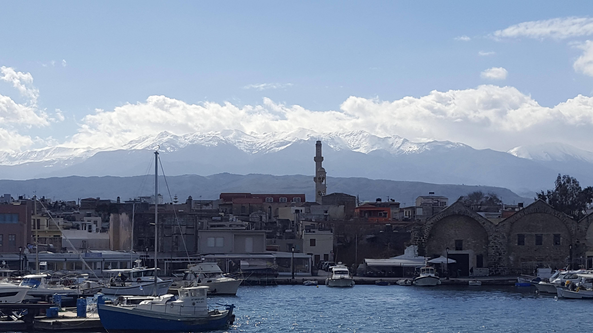

Current
I am a senior working on my BS in Computer Science and will graduate this spring.
I'm from Kansas City, MO and currently live in St Joseph so I commute to Maryville everyday
for
class.
I've been in the military for 6 years now hence why its taken me so long to get my degree.
Being in the military is something that's very important to me as I'm the fourth generation
in my
family to servce.
I've spent every summer except this most recent one working at my base or deploying.
This summer though I decided to build my resume a bit so I got an internship at United Fiber
in
Savannah. I loved working there and hope to go back someday.
I've also been working on getting my Private Pilot License which takes up most of my free
time.
Additional Education and Organizations:
- Associate of Applied Science in Aviation Maintenance Technology
- Community College of the Air Force, Maxwell AFB, Alabama
- Airman Leadership School
- United States Air Force
- Vice President of Association for Computing and Machinery
- Northwest Missouri State Univeristy 2019
Future
In the future I hope to become a pilot in the military, hence part of the reason I'm getting a degree. I eventually hope to make it my full time job. That being said I choose to get a degree in computer science because it's also something that I'm passionate about and would love for the oppurtunity to mix my two professions.
Skills
| Languages | Software |
|---|---|
| Java/C/Python | Git |
| SQL/NoSQL | Visual Paradigm |
| HTML/CSS/JavaScript | NetBeans |
Interets
Aside from flying planes I also do
maintenance on them. Its a hard but fun job that has allowed me to travel the world and see
places
I've
never thought I would. One of those place I've been to is Greece.
The image below is of the Mount Ida on the Greek island of Crete.

- photo by: Chase S
Here's a little video that does a great job of describing what my maintenance job is like.